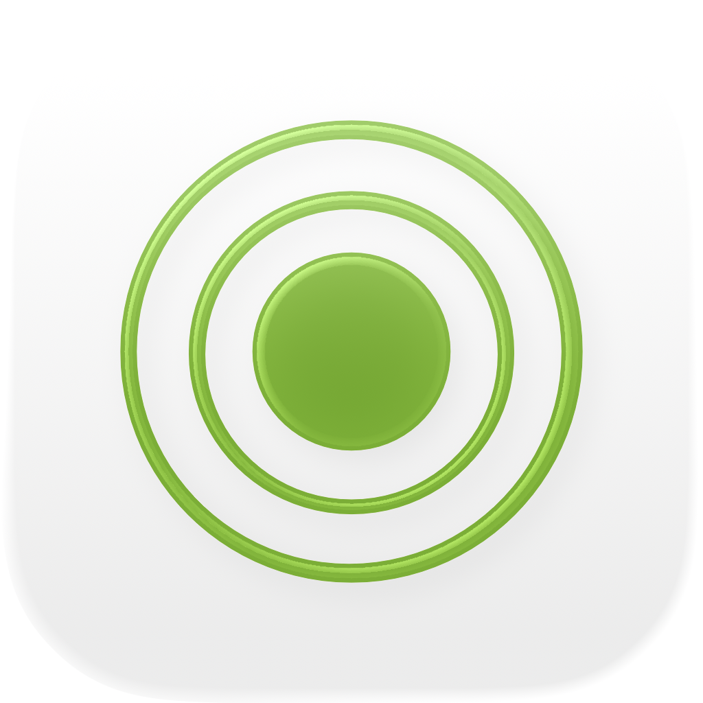
Modes til macOS
Modes er en musikteoriapp til macOS med skalaer, akkorder, voicinger og moduleringsveje i en app med indholdsoversigt, der kan stå ved siden af din DAW. Siri, Genveje, Spotlight-søgning og widgets i Meddelelsescenter understøttes.
- Skala- og akkordfinder med MIDI + tastatur på skærmen
- 65 skalaer · 21 akkordtyper · 8 voicing-familier
- Fælles toner, fælles akkorder, lånte akkorder
- Interaktiv kvintcirkel + tertscirkel
- Siri, Genveje, Spotlight og widgets i Meddelelsescenter
Skærmbilleder
Med lyse og mørke skærmbilleder, der følger webstedets tema.


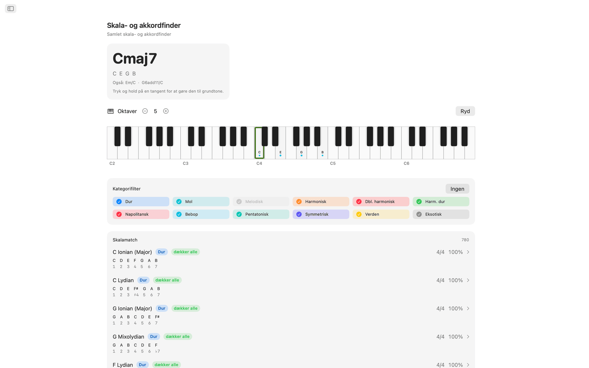
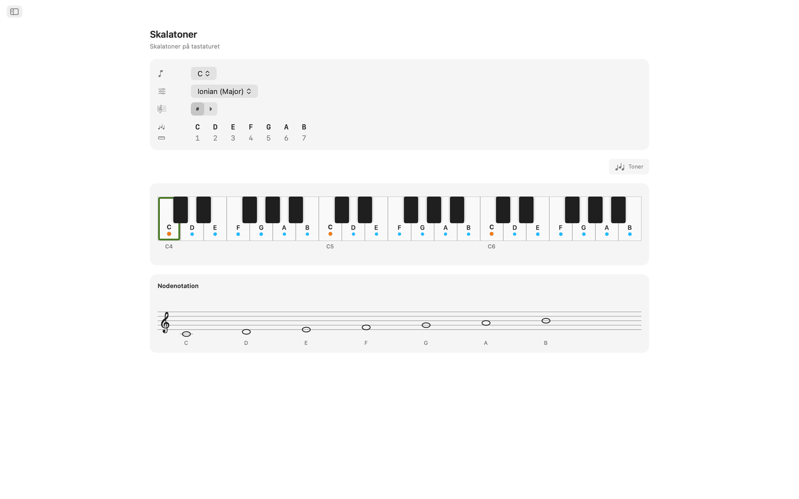
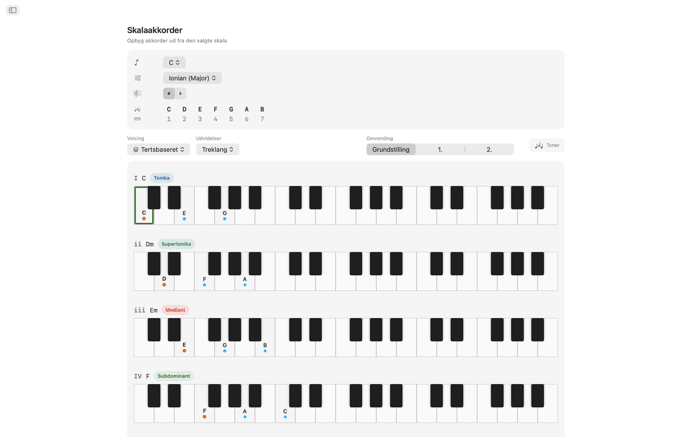
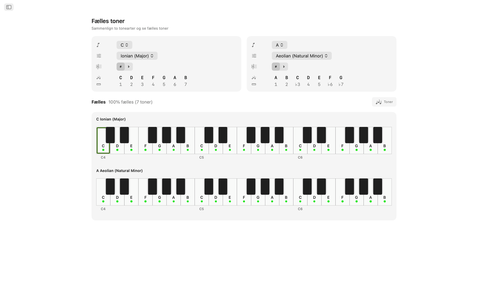
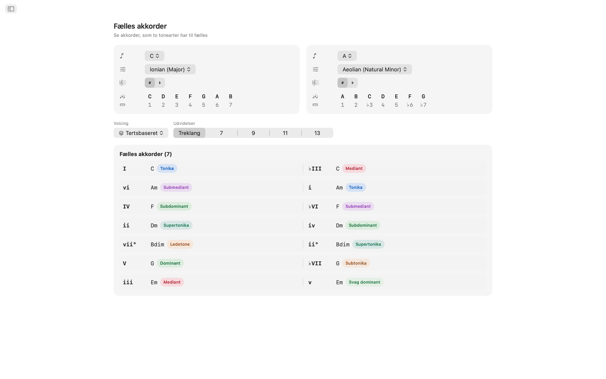
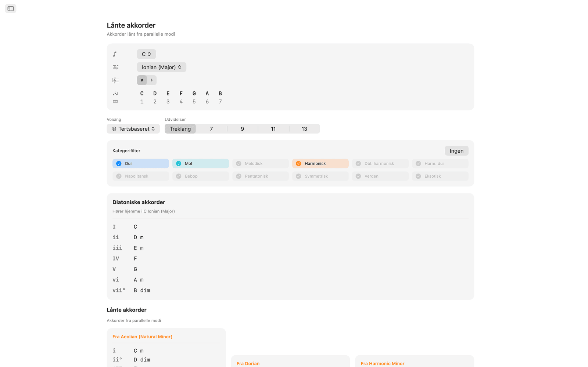
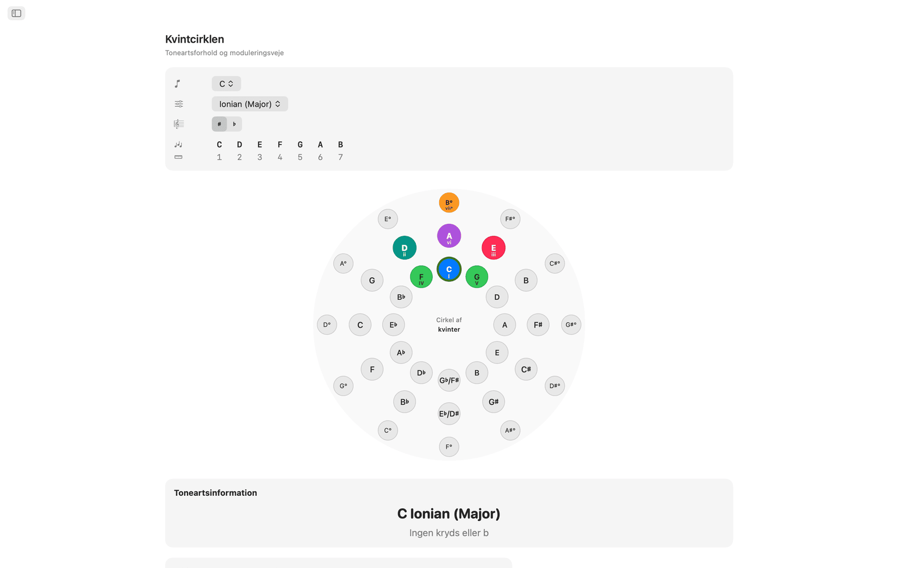
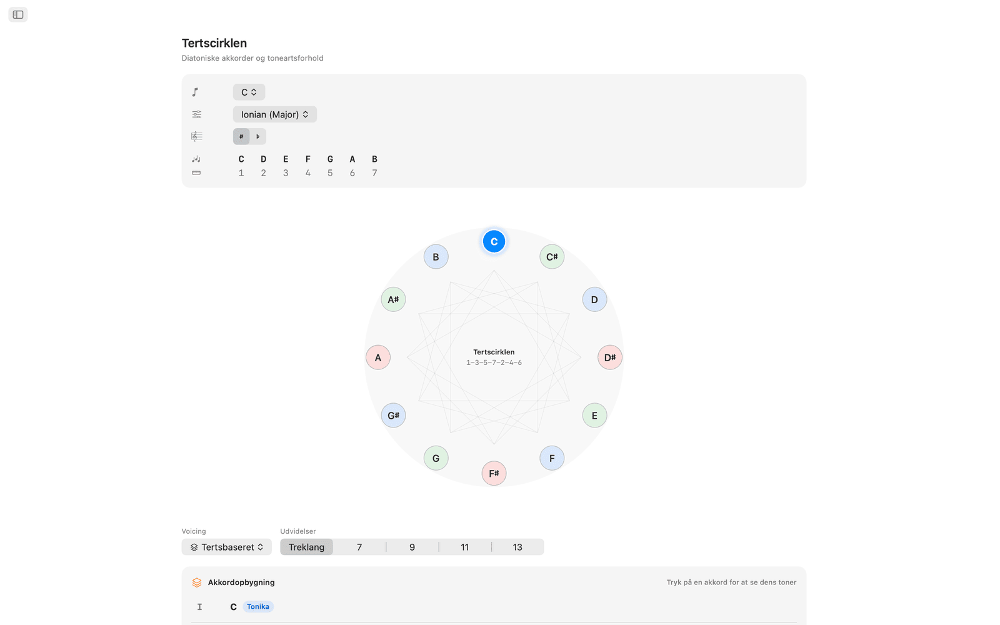
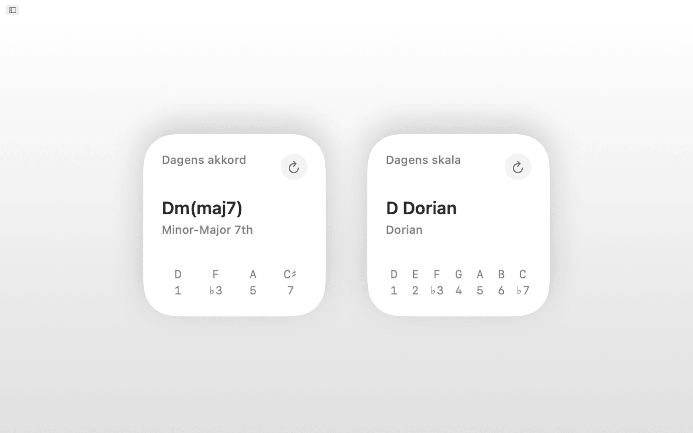
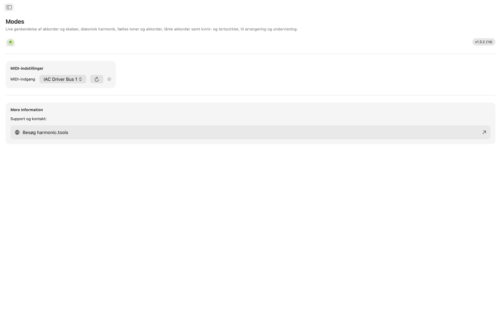
Funktioner
- Spil toner på det interaktive tastatur over flere oktaver, eller tilslut en MIDI-controller, så genkender Modes den akkord, du spiller, i realtid: dur, mol, formindsket, forstørret, udvidede, suspenderede og flere. Appen rangerer alle skalaer, der passer, efter hvor mange af tonerne de dækker, og du kan filtrere resultaterne efter skalakategori (diatonisk, melodisk mol, harmonisk mol, pentatonisk, bebop, symmetrisk, verdensskalaer og flere).
- De 65 skalaer og modi omfatter de syv diatoniske modi, melodisk mol, harmonisk mol, dobbelt harmonisk, napolitansk, bebop, pentatonisk, blues, heltone, formindsket, forstørret og verdensskalaer som Hirajōshi, Kumoi, In Sen, persisk og enigmatisk. Hver skala er skrevet ud med intervalbetegnelser og fremhævet på tastaturet.
- Vælg en vilkårlig grundtone og skala for at se alle toner i tonearten fremhævet over to oktaver, så du kan se, hvilke toner der hører med, og hvor grundtonen ligger.
- Modes opbygger diatoniske treklange eller septimakkorder på hvert trin i den valgte skala, med romertal, akkordnavne, funktionsmærker (tonika, subdominant, dominant og over 30 mere detaljerede betegnelser) og voicede visninger på tastaturet, alt sammen på linje, så det er let at sammenligne.
- Akkorder kan opbygges som tertsbaserede, sus2, sus4, sekst, add, kvartale, kvintale og power-voicinger, fra treklange op til 13-akkorder, og hver udvidelse får automatisk sit navn.
- Fælles toner og Fælles akkorder sammenligner to vilkårlige tonearter side om side: hvilke toner der overlapper, hvilke der er unikke, og hvilke akkorder begge tonearter deler. Det hjælper ved modulation og reharmonisering.
- Visningen Lånte akkorder viser din tonearts egne diatoniske akkorder side om side med alle lånte muligheder fra parallelle modi, grupperet efter kildemodus.
- Kvintcirklen er en interaktiv cirkel med to ringe (dur yderst, naturlig mol inderst). Klik på en sektor for at skifte toneart. Dominant, subdominant, relativ, parallel og nærtbeslægtede tonearter vises, med mærker for modulationens sværhedsgrad og oplysninger om fortegn.
- Tertscirklen viser kromatiske mediantforhold på et diagram over den formindskede cyklus. Knapper for dur og mol på hver tonehøjdeklasse viser mediant-, relative og parallelle forbindelser, hvilket er nyttigt til filmisk og neo-riemannsk modulationsplanlægning.
- Tilslut et vilkårligt class-compliant MIDI-keyboard eller -controller. Toner, du spiller, flettes sammen med dem, du klikker på skærmen, så genkendelsen opdateres.
- Bed Siri eller kør en genvej om at vise en skalas toner, vise akkorderne i en toneart, genkende en skala eller akkord, stave en akkord, finde intervallet mellem to toner, transponere en tone eller åbne kvintcirklen og de lånte akkorder. Skalaer og akkorder er også indekseret i Spotlight.
- Widgetterne Dagens skala og Dagens akkord kan føjes til Meddelelsescenter.
På skrivebordet
- Kører helt offline. Ingen konto, ingen reklamer, ingen sporing
- Native macOS-app med navigation i indholdsoversigt
- Brugerflade, der følger systemets udseende, også mørk tilstand
- Enharmonisk stavning: automatisk, kryds eller b
- Vindue med variabel størrelse. Hav det åbent ved siden af din DAW
Tilgængelighed
Fungerer med VoiceOver og Stemmestyring og kan bruges fra tastaturet med piletasterne og mellemrumstasten.
Modes er gratis at prøve i 7 dage. Efter prøveperioden er fuld adgang et engangskøb uden abonnement.
Musikteori i appen
Opslag til appens skalaer, modi, akkorder, voicinger, intervaller og harmoniske værktøjer med de nodeformler, der ligger bag hver enkelt.
Skalaer og modi 65 i alt
Hver skala er skrevet ud med intervalbetegnelser og fremhævet over tastaturet, med automatisk stavning, kryds eller b.
Durmodi (diatoniske)
| Ionian (Major) | 1 2 3 4 5 6 7 |
| Dorian | 1 2 ♭3 4 5 6 ♭7 |
| Phrygian | 1 ♭2 ♭3 4 5 ♭6 ♭7 |
| Lydian | 1 2 3 ♯4 5 6 7 |
| Mixolydian | 1 2 3 4 5 6 ♭7 |
| Aeolian (Natural Minor) | 1 2 ♭3 4 5 ♭6 ♭7 |
| Locrian | 1 ♭2 ♭3 4 ♭5 ♭6 ♭7 |
Melodisk mol-modi (jazzmol)
| Melodic Minor (Jazz Minor) | 1 2 ♭3 4 5 6 7 |
| Dorian ♭2 (Phrygian ♮6) | 1 ♭2 ♭3 4 5 6 ♭7 |
| Lydian Augmented (Lydian ♯5) | 1 2 3 ♯4 ♯5 6 7 |
| Lydian Dominant (Lydian ♭7) | 1 2 3 ♯4 5 6 ♭7 |
| Mixolydian ♭6 (Aeolian Dominant) | 1 2 3 4 5 ♭6 ♭7 |
| Locrian ♯2 (Locrian ♮2) | 1 2 ♭3 4 ♭5 ♭6 ♭7 |
| Altered (Super-Locrian) | 1 ♭2 ♭3 ♭4 ♭5 ♭6 ♭7 |
Harmonisk mol-modi
| Harmonic Minor | 1 2 ♭3 4 5 ♭6 7 |
| Locrian ♮6 | 1 ♭2 ♭3 4 ♭5 6 ♭7 |
| Ionian ♯5 (Augmented Major) | 1 2 3 4 ♯5 6 7 |
| Dorian ♯4 (Ukrainian Dorian) | 1 2 ♭3 ♯4 5 6 ♭7 |
| Phrygian Dominant | 1 ♭2 3 4 5 ♭6 ♭7 |
| Lydian ♯2 | 1 ♯2 3 ♯4 5 6 7 |
| Super Locrian ♭♭7 (Altered ♭♭7) | 1 ♭2 ♭3 ♭4 ♭5 ♭6 ♭♭7 |
Dobbelt harmonisk mol-modi (ungarsk mol)
| Hungarian Minor (Double Harmonic Minor) | 1 2 ♭3 ♯4 5 ♭6 7 |
| Oriental (Mode 2) | 1 ♭2 3 4 ♭5 6 ♭7 |
| Ionian ♯2 ♯5 | 1 ♯2 3 4 ♯5 6 7 |
| Locrian ♭♭3 ♭♭7 | 1 ♭2 ♭♭3 4 ♭5 ♭6 ♭♭7 |
| Double Harmonic Major | 1 ♭2 3 4 5 ♭6 7 |
| Lydian ♯2 ♯6 | 1 ♯2 3 ♯4 5 ♯6 7 |
| Ultraphrygian | 1 ♭2 ♭3 ♭4 5 ♭6 ♭♭7 |
Harmonisk dur
| Harmonic Major (Ionian ♭6) | 1 2 3 4 5 ♭6 7 |
| Double Harmonic Major (Byzantine) | 1 ♭2 3 4 5 ♭6 7 |
Napolitansk mol-modi
| Neapolitan Minor | 1 ♭2 ♭3 4 5 ♭6 7 |
| Lydian ♯6 | 1 2 3 ♯4 5 ♯6 7 |
| Mixolydian Augmented | 1 2 3 4 ♯5 6 ♭7 |
| Romani Minor (Aeolian ♯4) | 1 2 ♭3 ♯4 5 ♭6 ♭7 |
| Locrian Dominant | 1 ♭2 3 4 ♭5 ♭6 ♭7 |
| Ionian ♯2 | 1 ♯2 3 4 5 6 7 |
| Ultralocrian | 1 ♭2 ♭♭3 ♭4 ♭5 ♭6 ♭♭7 |
Napolitansk dur-modi
| Neapolitan Major | 1 ♭2 ♭3 4 5 6 7 |
| Leading Whole Tone (Lydian Augmented ♯6) | 1 2 3 ♯4 ♯5 ♯6 7 |
| Lydian Augmented Dominant | 1 2 3 ♯4 ♯5 6 ♭7 |
| Lydian Dominant ♭6 | 1 2 3 ♯4 5 ♭6 ♭7 |
| Major Locrian | 1 2 3 4 ♭5 ♭6 ♭7 |
| Half-Diminished ♭4 (Altered Dominant ♯2) | 1 2 ♭3 ♭4 ♭5 ♭6 ♭7 |
| Altered Dominant ♭♭3 | 1 ♭2 ♭♭3 ♭4 ♭5 ♭6 ♭7 |
Bebop
| Bebop Dominant | 1 2 3 4 5 6 ♭7 7 |
| Bebop Major | 1 2 3 4 5 ♭6 6 7 |
Pentatonik og blues
| Pentatonic Major | 1 2 3 5 6 |
| Pentatonic Suspended (Egyptian) | 1 2 4 5 ♭7 |
| Pentatonic Blues Minor (Man Gong) | 1 ♭3 4 ♭6 ♭7 |
| Pentatonic Blues Major (Yo) | 1 2 4 5 6 |
| Pentatonic Minor | 1 ♭3 4 5 ♭7 |
| Pentatonic Japanese (In) | 1 ♭2 4 5 ♭6 |
| Blues | 1 ♭3 4 ♭5 5 ♭7 |
| Blues (Major) | 1 2 ♭3 3 5 6 |
Symmetriske og syntetiske skalaer
| Whole Tone | 1 2 3 ♯4 ♯5 ♭7 |
| Diminished (Half-Whole) | 1 ♭2 ♭3 3 ♭5 5 6 ♭7 |
| Diminished (Whole-Half) | 1 2 ♭3 4 ♭5 ♭6 6 7 |
| Augmented (Hexatonic) | 1 ♭3 3 5 ♯5 7 |
| Prometheus (Mystic Hexatonic) | 1 2 3 ♯4 6 ♭7 |
Japanske pentatonikker
| Hirajōshi | 1 2 ♭3 5 ♭6 |
| Kumoi | 1 2 ♭3 5 6 |
| In Sen | 1 ♭2 4 5 ♭7 |
| Iwato | 1 ♭2 4 ♭5 ♭7 |
Verdensskalaer / øvrige
| Persian | 1 ♭2 3 4 ♭5 ♭6 7 |
| Enigmatic | 1 ♭2 3 ♯4 ♯5 ♯6 7 |
Akkorder
Genkendte akkordtyper 21
Akkorder genkendes ud fra de toner, du spiller, og tensionerne 9, 11 og 13 føjes automatisk til (vist som add9, add11, add13, når der ikke er nogen septim). Når den dybeste tone ligger under akkorden, behandles den som en basstone og vises som en slash-akkord (f.eks. C/E).
| Akkord | Symbol | Intervaller |
|---|---|---|
| Major | - | 1 3 5 |
| Minor | m | 1 ♭3 5 |
| Diminished | dim | 1 ♭3 ♭5 |
| Augmented | aug | 1 3 ♯5 |
| Suspended 2nd | sus2 | 1 2 5 |
| Suspended 4th | sus4 | 1 4 5 |
| Power Chord | 5 | 1 5 |
| Major 6th | 6 | 1 3 5 6 |
| Minor 6th | m6 | 1 ♭3 5 6 |
| Dominant 7th | 7 | 1 3 5 ♭7 |
| Major 7th | maj7 | 1 3 5 7 |
| Minor 7th | m7 | 1 ♭3 5 ♭7 |
| Half-Diminished 7th | m7♭5 | 1 ♭3 ♭5 ♭7 |
| Diminished 7th | dim7 | 1 ♭3 ♭5 ♭♭7 |
| Minor-Major 7th | m(maj7) | 1 ♭3 5 7 |
| Augmented 7th | aug7 | 1 3 ♯5 ♭7 |
| Augmented Major 7th | aug(maj7) | 1 3 ♯5 7 |
| Major (♭5) | (♭5) | 1 3 ♭5 |
| Diminished (♭♭3) | dim(♭♭3) | 1 ♭♭3 ♭5 |
| Dominant 7sus4 | 7sus4 | 1 4 5 ♭7 |
| Dominant 7sus2 | 7sus2 | 1 2 5 ♭7 |
Akkordkvaliteter (opbygning) 6
Kvalitetsvalg i akkordbyggeren, hver med sin romertalsanalyse.
| Kvalitet | Symbol | Romertal |
|---|---|---|
| Major | - | Store bogstaver (I, IV, V…) |
| Minor | m | Små bogstaver (ii, iii, vi…) |
| Diminished | ° | Små bogstaver + ° (vii°) |
| Augmented | + | Store bogstaver + + (III+) |
| Major (♭5) | (♭5) | Store bogstaver + (♭5) |
| Diminished (♭♭3) | °(♭♭3) | Små bogstaver + °(♭♭3) |
Akkordvoicinger 8 typer
Hver akkord kan voicinges på otte måder, fra tertsbaserede voicinger med stablede terter til kvartale og kvintale stakke.
| Voicing | Størrelser | Beskrivelse |
|---|---|---|
| Tertsbaseret | Treklang, 7, 9, 11, 13 | Almindelige voicinger med stablede terter |
| sus2 | Treklang, 7 | Erstatter tertsen med sekunden |
| sus4 | Treklang, 7 | Erstatter tertsen med kvarten |
| Sekst | 6, 6/9 | Tilføjer sekst (og eventuelt none) |
| Add | add9, add11 | Tilføjer en tone uden septimen |
| Kvartal | 3 toner, 4 toner | Opbygget af stablede kvarter |
| Kvintal | 3 toner, 4 toner | Opbygget af stablede kvinter |
| Power | 2 toner | Kun grundtone + kvint |
Akkordstørrelser
| Størrelse | Mærke | Toner |
|---|---|---|
| Power | 5 | 2 |
| Triad | Triad | 3 |
| Sixth | 6 | 4 |
| Six-Nine | 6/9 | 5 |
| Seventh | 7 | 4 |
| Ninth | 9 | 5 |
| Eleventh | 11 | 6 |
| Thirteenth | 13 | 7 |
| Add 9 | add9 | 4 |
| Add 11 | add11 | 4 |
| Quartal 4-note | 4×4 | 4 |
| Quintal 4-note | 5×4 | 4 |
Intervaller 12 kromatiske
Hvert kromatisk interval med sin omvending.
| Halvtonetrin | Interval | Omvending |
|---|---|---|
| 0 | Unison | Octave |
| 1 | Minor 2nd | Major 7th |
| 2 | Major 2nd | Minor 7th |
| 3 | Minor 3rd | Major 6th |
| 4 | Major 3rd | Minor 6th |
| 5 | Perfect 4th | Perfect 5th |
| 6 | Tritone | Tritone |
| 7 | Perfect 5th | Perfect 4th |
| 8 | Minor 6th | Major 3rd |
| 9 | Major 6th | Minor 3rd |
| 10 | Minor 7th | Major 2nd |
| 11 | Major 7th | Minor 2nd |
Harmonisk analyse 31 funktionsmærker
Diatoniske akkorder inddeles i tre funktionsfamilier.
Tonikafamilien
Subdominantfamilien
Dominantfamilien
Tonearter
Alle 12 kromatiske tonearter med både kryds- og b-stavning. Enharmonisk stavning kan indstilles til automatisk (afhængig af sammenhængen), kryds eller b.
Tonearter med kryds
Tonearter med b
Kvintcirklen
Navigation i kvintcirklen med data om beslægtede tonearter for hver toneart.
C → G → D → A → E → B → F♯/G♭ → D♭ → A♭ → E♭ → B♭ → F → C
Hver toneart viser sine forhold til relativ mol/dur, parallel dur/mol, dominant, subdominant, supertonika og mediant, med mærker for modulationens sværhedsgrad og oplysninger om fortegn.
Tertscirklen
Ordner tonehøjder efter vekslende store og små terter (4-3-4-3 halvtoner) i en gentagen sekvens på 24 toner (12 dur- og 12 mol-positioner): nyttigt til at forstå, hvordan treklange og septimakkorder stables.
- Tonerne optræder i rækkefølgen 1-3-5-7-2-4-6 (f.eks. C-E-G-B-D-F-A), den rækkefølge akkordtonerne stables i.
- Huskeregelen DFACEGB dækker diatoniske terter på tværs af tonearter med b, uden fortegn og med kryds.
- Den består af tre cyklusser af formindskede septimakkorder med fire positioner hver.
- Den kan bruges til Coltrane-changes og kromatiske mediantforhold.
Lånte akkorder (modal interchange)
For enhver toneart viser appen både de diatoniske akkorder og de lånte akkorder fra parallelle modi, hver med et ændret romertal og en beskrivelse af almindelig brug.
Lånekilder efter skala
| Aktuel skala | Almindelige lånekilder |
|---|---|
| Ionian (Major) | Aeolian, Dorian, Phrygian, Mixolydian, Harmonic Minor, Melodic Minor, Lydian |
| Aeolian (Natural Minor) | Ionian, Mixolydian, Dorian, Harmonic Minor, Phrygian Dominant |
| Dorian | Ionian, Aeolian, Mixolydian, Harmonic Minor |
| Phrygian | Aeolian, Harmonic Minor, Phrygian Dominant, Ionian |
| Lydian | Ionian, Aeolian, Mixolydian |
| Mixolydian | Ionian, Aeolian, Dorian |
| Locrian | Aeolian, Phrygian, Harmonic Minor |
| Harmonic Minor | Aeolian, Ionian, Melodic Minor |
| Melodic Minor | Harmonic Minor, Aeolian, Ionian |
| Phrygian Dominant | Harmonic Minor, Aeolian, Phrygian |
| Øvrige skalaer | Ionian, Aeolian (grundlæggende lån mellem dur og mol) |
Almindelige lånte akkorder til dur
| Akkord | Kilde | Typisk brug |
|---|---|---|
| iv | Aeolian / Harmonic Minor | Den mest almindelige lånte akkord: melankolsk subdominant |
| ♭VI | Aeolian | Bedragerisk kadence i pop/rock |
| ♭VII | Mixolydian / Aeolian | Kadence i rock/blues (subtonika) |
| ♭III | Aeolian | Medianskift mellem parallel dur/mol |
| i | Aeolian | Moltonikaens farve |
| ii° | Aeolian | Mørkere prædominant med ♭6 |
| vii°7 | Harmonic Minor | Helt formindsket, kraftig opløsning til I |
| ♭VI+ | Harmonic Minor | Forstørret kromatisk stemmeføring |
| ♭II (Neapolitan) | Phrygian | Dramatisk prædominant |
| II | Dorian | Dur-supertonika med en følelse af sekundær dominant |